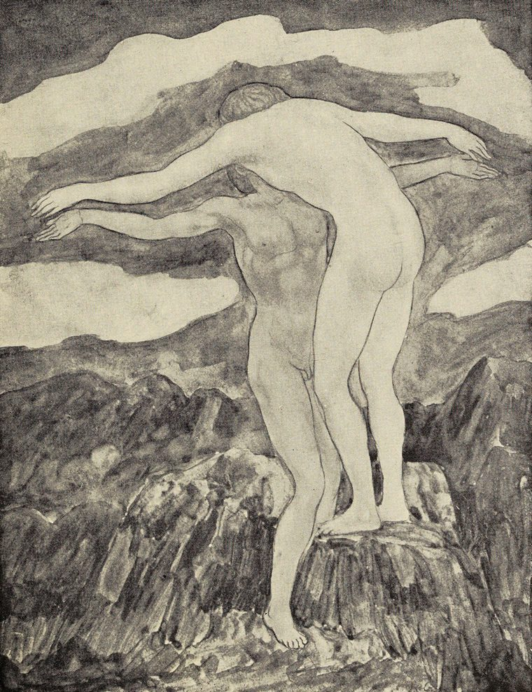
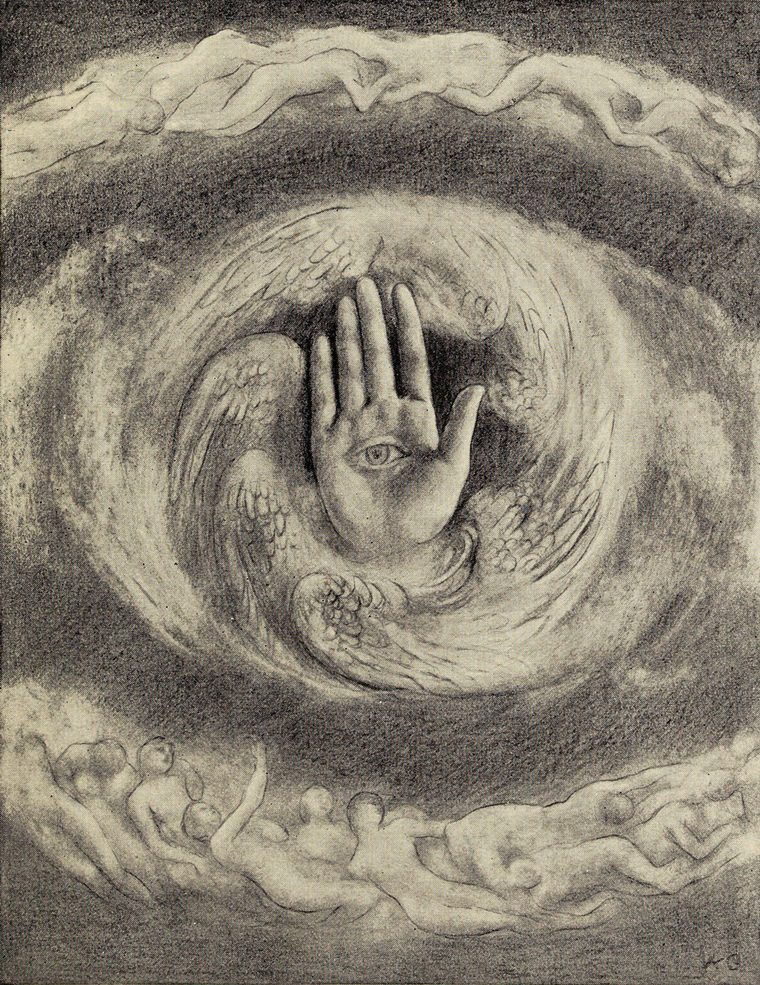

28L'addio
E ora era sera.
E Almitra la veggente disse: Benedetto sia questo giorno e questo luogo, e il tuo spirito che ha parlato.
Ed egli rispose: Sono stato io a parlare? Non ero anch'io uno che ascoltava?
Poi scese i gradini del Tempio, e tutto il popolo lo seguì. Ed egli raggiunse la sua nave e salì sul ponte.
E volgendosi di nuovo al popolo, alzò la voce e disse:
Popolo di Orfalese, il vento mi ordina di lasciarvi.
Meno impaziente del vento sono io, eppure devo andare.
Noi viandanti, sempre in cerca della via più solitaria, non cominciamo un giorno là dove ne abbiamo finito un altro; e nessuna alba ci trova dove ci ha lasciati il tramonto. Anche mentre la terra dorme, noi siamo in cammino.
Siamo i semi della pianta tenace, ed è nella nostra maturità e nella pienezza del nostro cuore che veniamo dati al vento e dispersi.
Brevi sono stati i miei giorni tra voi, e più brevi ancora le parole che ho detto.
Ma se la mia voce dovesse svanire nelle vostre orecchie, e il mio amore dileguarsi nella vostra memoria, allora tornerò,
E con un cuore più ricco e labbra più docili allo spirito parlerò.
Sì, ritornerò con la marea,
E benché la morte possa nascondermi, e il silenzio più grande avvolgermi, ancora cercherò la vostra comprensione.
E non la cercherò invano.
Se qualcosa di ciò che ho detto è verità, quella verità si rivelerà con una voce più chiara, e con parole più vicine ai vostri pensieri.
Me ne vado col vento, popolo di Orfalese, ma non verso il vuoto; e se questo giorno non è il compimento dei vostri bisogni e del mio amore, allora sia una promessa fino a un altro giorno.
I bisogni dell'uomo cambiano, ma non il suo amore, né il suo desiderio che il suo amore soddisfi i suoi bisogni.
Sappiate dunque che dal silenzio più grande io ritornerò.
La nebbia che all'alba si dilegua, lasciando nei campi soltanto rugiada, salirà e si raccoglierà in una nube, e poi ricadrà in pioggia.
E non diverso dalla nebbia sono stato io.
Nella quiete della notte ho camminato per le vostre strade, e il mio spirito è entrato nelle vostre case,
E i battiti del vostro cuore erano nel mio cuore, e il vostro respiro era sul mio volto, e vi ho conosciuti tutti.
Sì, ho conosciuto la vostra gioia e il vostro dolore, e nel vostro sonno i vostri sogni erano i miei sogni.
E spesso sono stato tra voi un lago tra le montagne.
Ho rispecchiato in voi le vette e i pendii che si piegano, e perfino i greggi passeggeri dei vostri pensieri e dei vostri desideri.
E al mio silenzio giungeva il riso dei vostri bambini a ruscelli, e la nostalgia dei vostri giovani a fiumi.
E quando raggiungevano la mia profondità, i ruscelli e i fiumi non cessavano ancora di cantare.

Ma qualcosa di più dolce del riso e di più grande della nostalgia giunse fino a me.
Era l'infinito che è in voi;
L'uomo immenso di cui voi tutti non siete che cellule e tendini;
Colui nel cui canto tutto il vostro cantare non è che un palpito senza suono.
È nell'uomo immenso che voi siete immensi,
Ed è contemplando lui che ho contemplato voi e vi ho amati.
Perché quali distanze può raggiungere l'amore che non siano in quella sfera immensa?
Quali visioni, quali attese e quali presunzioni possono volare più in alto di quel volo?
Come una quercia gigantesca coperta di fiori di melo è l'uomo immenso che è in voi. La sua forza vi lega alla terra, il suo profumo vi solleva nello spazio, e nella sua durata voi siete senza morte.
Vi è stato detto che, proprio come una catena, siete deboli quanto il vostro anello più debole.
Questa non è che metà della verità. Siete anche forti quanto il vostro anello più forte.
Misurarvi dal vostro atto più piccolo è stimare la potenza dell'oceano dalla fragilità della sua schiuma.
Giudicarvi dai vostri fallimenti è gettare biasimo sulle stagioni per la loro incostanza.
Sì, voi siete come un oceano,
E benché navi dalla chiglia pesante attendano la marea sulle vostre rive, pure, proprio come un oceano, non potete affrettare le vostre maree.
E siete anche come le stagioni,
E benché nel vostro inverno rinneghiate la vostra primavera,
Pure la primavera, che riposa dentro di voi, sorride nel suo torpore e non si offende. Non pensate che io dica queste cose perché possiate dirvi l'un l'altro: «Ci ha lodati bene. Non ha visto in noi che il bene.»
Io vi dico soltanto con le parole ciò che voi stessi sapete nel pensiero.
E che cos'è la conoscenza delle parole se non un'ombra della conoscenza senza parole?
I vostri pensieri e le mie parole sono onde di una memoria sigillata che custodisce le cronache dei nostri ieri,
E dei giorni antichi, quando la terra non conosceva né noi né se stessa,
E delle notti in cui la terra era sconvolta dalla confusione.
Uomini saggi sono venuti da voi per darvi della loro saggezza. Io sono venuto a prendere della vostra saggezza:
Ed ecco, ho trovato ciò che è più grande della saggezza.
È uno spirito di fiamma in voi, che sempre raccoglie altro di sé,
Mentre voi, incuranti del suo espandersi, piangete l'appassire dei vostri giorni. È la vita in cerca della vita in corpi che temono la tomba.
Non ci sono tombe qui.
Questi monti e queste pianure sono una culla e una pietra su cui salire.
Ogni volta che passate accanto al campo dove avete deposto i vostri antenati, guardatelo bene, e vedrete voi stessi e i vostri figli danzare tenendovi per mano.
In verità, spesso fate festa senza saperlo.
Altri sono venuti da voi, ai quali, per promesse d'oro fatte alla vostra fede, avete dato soltanto ricchezza e potere e gloria.
Meno di una promessa vi ho dato io, eppure con me siete stati più generosi.
Mi avete dato la mia sete più profonda di vita.
Certo non c'è dono più grande per un uomo di quello che muta tutti i suoi scopi in labbra riarse e tutta la vita in una fonte.

E in questo sta il mio onore e la mia ricompensa,—
Che ogni volta che vengo alla fonte per bere, trovo assetata l'acqua viva stessa;
Ed essa beve me mentre io bevo lei.
Alcuni di voi mi hanno giudicato orgoglioso e troppo schivo per accettare doni.
Troppo orgoglioso, sì, sono per accettare un salario, ma non dei doni.
E benché io abbia mangiato bacche tra le colline quando avreste voluto che sedessi alla vostra tavola,
E abbia dormito sotto il portico del tempio quando mi avreste ospitato con gioia,
Non era forse il vostro amorevole pensiero per i miei giorni e le mie notti a rendere dolce il cibo alla mia bocca e a cingere di visioni il mio sonno?
Per questo più di tutto vi benedico:
Voi date molto e non sapete affatto di dare. In verità la bontà che si guarda allo specchio diventa pietra,
E una buona azione che si chiama con nomi teneri diventa madre di una maledizione.
E alcuni di voi mi hanno chiamato distante, ebbro della mia solitudine,
E avete detto: «Si consiglia con gli alberi della foresta, ma non con gli uomini.
Siede solo sulle cime dei colli e guarda dall'alto la nostra città.»
È vero che ho salito i colli e ho camminato in luoghi remoti.
Come avrei potuto vedervi se non da una grande altezza o da una grande distanza?
Come si può essere vicini se non si è lontani?
E altri tra voi mi hanno chiamato, non con parole, e hanno detto:
«Straniero, straniero, amante delle altezze irraggiungibili, perché dimori tra le vette dove le aquile costruiscono i nidi? Perché cerchi l'inafferrabile?
Quali tempeste vorresti prendere nella tua rete,
Vieni e sii uno di noi.
Vieni ed essere uno di noi.
Scendi, e placa la tua fame col nostro pane e spegni la tua sete col nostro vino.»
Nella solitudine delle loro anime dicevano queste cose;
Ma se la loro solitudine fosse stata più profonda, avrebbero saputo che io cercavo soltanto il segreto della vostra gioia e del vostro dolore,
E cacciavo soltanto i vostri io più grandi che camminano nel cielo.
Ma il cacciatore era anche la preda;
Perché molte delle mie frecce lasciavano il mio arco soltanto per cercare il mio stesso petto.
E chi volava era anche chi strisciava;
Perché quando le mie ali erano spiegate al sole, la loro ombra sulla terra era una tartaruga.
E io, il credente, ero anche colui che dubita; perché spesso ho messo il dito nella mia stessa ferita per avere una fede più grande in voi e una più grande conoscenza di voi.
Ed è con questa fede e questa conoscenza che vi dico:
Voi non siete chiusi nei vostri corpi, né confinati in case o campi.
Ciò che è voi dimora sopra la montagna e vaga col vento.
Non è una cosa che striscia al sole per scaldarsi o scava buche nell'oscurità per stare al sicuro,
Ma una cosa libera, uno spirito che avvolge la terra e si muove nell'etere.
Se queste sono parole vaghe, non cercate di chiarirle.
Vago e nebuloso è il principio di tutte le cose, ma non la loro fine,
E vorrei che mi ricordaste come un principio.
La vita, e tutto ciò che vive, è concepita nella nebbia e non nel cristallo. E chi sa se il cristallo non sia nebbia che si disfa?
Questo vorrei che ricordaste nel ricordarmi:
Ciò che in voi sembra più debole e smarrito è ciò che è più forte e più deciso.
Non è forse il vostro respiro che ha eretto e indurito la struttura delle vostre ossa?
E non è forse un sogno, che nessuno di voi ricorda di aver sognato, ad aver costruito la vostra città e plasmato tutto ciò che vi si trova?
Se poteste vedere le maree di quel respiro, smettereste di vedere ogni altra cosa,
E se poteste udire il sussurro del sogno, non udireste nessun altro suono.
Ma voi non vedete, né udite, ed è bene così.
Il velo che offusca i vostri occhi sarà sollevato dalle mani che lo hanno tessuto,
E l'argilla che riempie le vostre orecchie sarà forata dalle dita che l'hanno impastata. E vedrete.
E udrete.
Eppure non piangerete di aver conosciuto la cecità, né rimpiangerete di essere stati sordi.
Perché in quel giorno conoscerete i fini nascosti in tutte le cose,
E benedirete l'oscurità come benedireste la luce.
Dette queste cose, si guardò intorno, e vide il pilota della sua nave in piedi presso il timone, che guardava ora le vele gonfie, ora la lontananza.
E disse:
Paziente, fin troppo paziente, è il capitano della mia nave.
Il vento soffia, e inquiete sono le vele;
Perfino il timone implora una rotta;
Eppure il mio capitano attende quieto il mio silenzio.
E questi miei marinai, che hanno udito il coro del mare più grande, anch'essi mi hanno ascoltato con pazienza. Ora non aspetteranno più.
Sono pronto.
Il ruscello ha raggiunto il mare, e ancora una volta la grande madre stringe il figlio al suo petto.
Addio a voi, popolo di Orfalese.
Questo giorno è finito.
Si chiude su di noi come la ninfea sul proprio domani.
Ciò che ci è stato dato qui lo custodiremo,
E se non basta, allora di nuovo dovremo riunirci e insieme tendere le mani verso colui che dona.
Non dimenticate che tornerò da voi.
Ancora un poco, e la mia nostalgia raccoglierà polvere e schiuma per un altro corpo.
Ancora un poco, un attimo di riposo sul vento, e un'altra donna mi partorirà.
Addio a voi e alla giovinezza che ho trascorso con voi.
Fu soltanto ieri che ci incontrammo in un sogno. Voi avete cantato per me nella mia solitudine, e io con le vostre nostalgie ho costruito una torre nel cielo.
Ma ora il nostro sonno è fuggito e il nostro sogno è finito, e non è più l'alba.
Il meriggio è su di noi, e il nostro mezzo risveglio si è fatto giorno più pieno, e dobbiamo separarci.
Se nel crepuscolo della memoria dovessimo incontrarci ancora, parleremo di nuovo insieme e voi canterete per me un canto più profondo.
E se le nostre mani dovessero incontrarsi in un altro sogno, costruiremo un'altra torre nel cielo.
Così dicendo fece un segno ai marinai, e subito essi levarono l'ancora e sciolsero la nave dagli ormeggi, e si mossero verso oriente.
E dal popolo salì un grido come da un unico cuore, e si levò nel crepuscolo e fu portato sopra il mare come un grande squillo di trombe.
Soltanto Almitra rimase in silenzio, seguendo con lo sguardo la nave finché non svanì nella nebbia.
E quando tutto il popolo si fu disperso, lei stava ancora sola sulla diga, ricordando nel suo cuore le sue parole:
«Ancora un poco, un attimo di riposo sul vento, e un'altra donna mi partorirà.»
